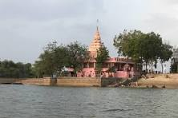

Heritage Site - Kaleshwar
The most important festival at Shree Kaleshwara Mandira is the five-day Mahashivaratri Utsava, in which the idol of Kaleshwara is drawn out of the temple in its chariot. The festival is accompanied by a fair and attracts visitors from great distances. Other festivals include Maghi Ganesha Utsava, celebrated in the month of Maagha, and Navratri Utsava.
History of Kaleshwar
It is dedicated to the village deity, Shree Kaleshwara, who is also called Kaloba. The temple dates back 700 to 800 years, when, according to legend, a brahmin dug into the ground and discovered a natural lingam, an emblem of Shiva. The temple was founded on that spot, and the lingam is now enshrined in the temple's sanctum sanctorum.